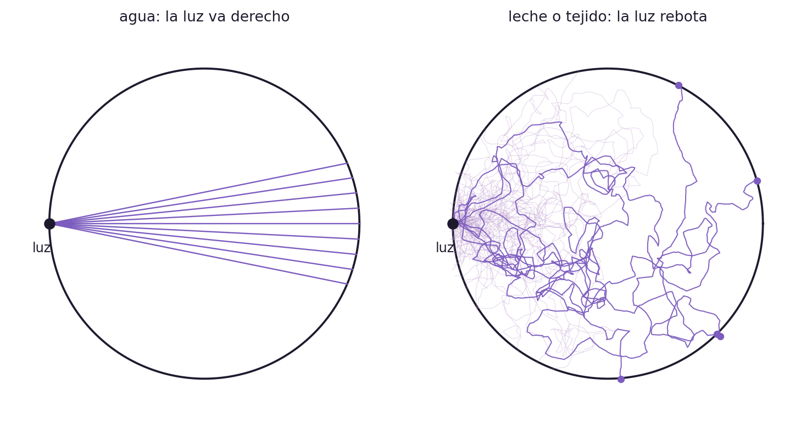
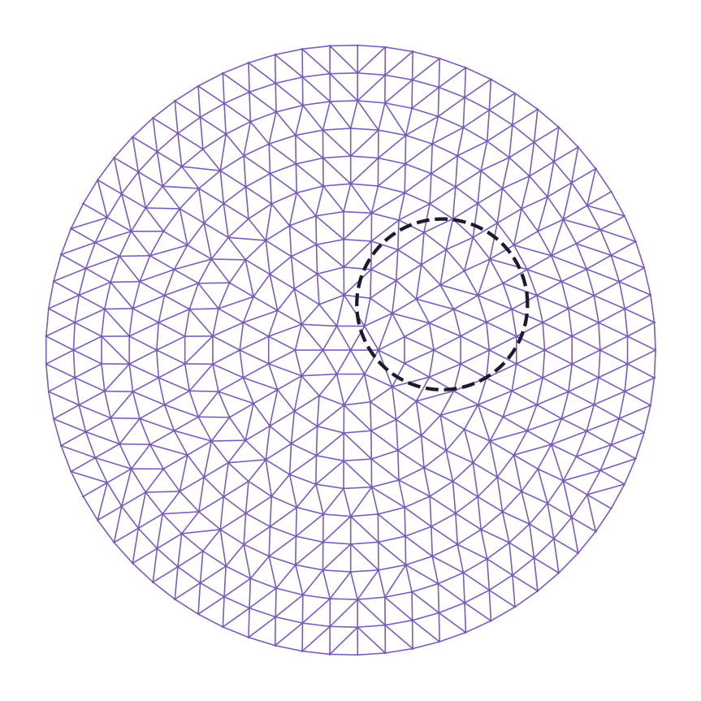
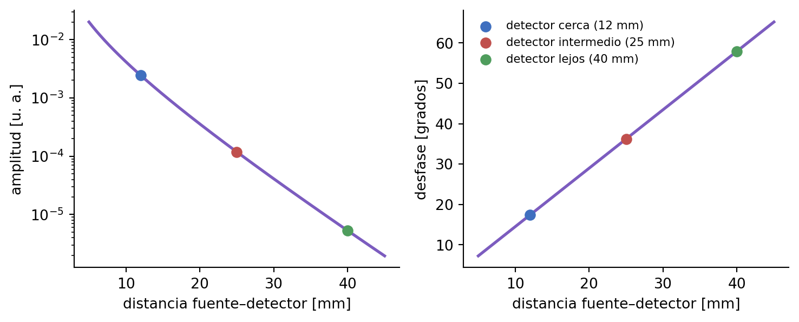
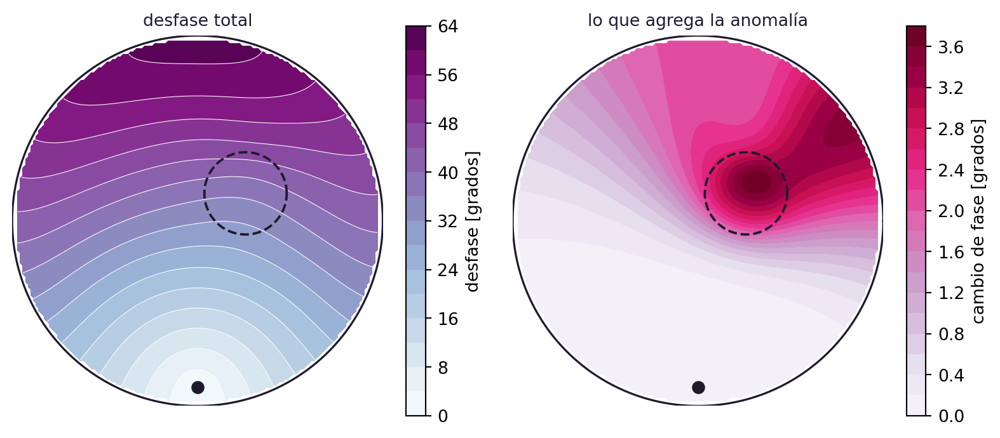

No podés ver el interior. Solo tenés la luz que sale.
STEM
Tesis
Tomografía óptica
Un vaso de leche, un tumor y un problema inverso. El recorrido completo de mi Trabajo Final de Licenciatura, de la pregunta inicial a las redes neuronales informadas por la física. Primera entrega de la serie.
Fecha de publicación
15 de agosto de 2026
Tenés un vaso de leche adelante y adentro hay algo. ¿Una moneda? ¿Una canica? ¿Un lápiz?
No podés verlo. La leche es opaca. Lo único que tenés es la luz que sale por las paredes del vaso.
La pregunta de este post —y de toda mi tesis— es si esa luz alcanza para reconstruir lo que hay adentro. Y la respuesta corta es: sí, pero cuesta mucho más de lo que parece, y el problema es mucho más lindo de lo que uno esperaría.
Esto se llama tomografía óptica difusa (DOT, por sus siglas en inglés). Y el vaso de leche no es un capricho: muchos tejidos del cuerpo humano se comportan igual que la leche.
Por qué la luz no va derecho
En un vaso de agua la luz viaja en línea recta. Si hay una moneda adentro, proyecta una sombra nítida y listo: eso es, esencialmente, una radiografía.
La leche y el tejido son medios turbios. Un fotón que entra choca contra membranas celulares, núcleos, mitocondrias, glóbulos de grasa. Rebota miles de veces antes de volver a salir, siguiendo una trayectoria que nadie puede seguir de principio a fin.
Ver el código de la figura
import numpy as npimport matplotlib.pyplot as pltVIOLETA, VIOLETA2, TINTA, GRIS ="#7c5cbf", "#b48ec8", "#1e1a2e", "#a99fc0"rng = np.random.default_rng(4)def hg_angulo(g, n):"""Angulo de desvio de un rebote, segun la funcion de fase de Henyey-Greenstein.""" xi = rng.random(n) mu = (1+ g**2- ((1- g**2)/(1- g +2*g*xi))**2)/(2*g)return np.arccos(np.clip(mu, -1, 1))*rng.choice([-1, 1], n)fig, axs = plt.subplots(1, 2, figsize=(7.8, 4.0))th = np.linspace(0, 2*np.pi, 300)ax = axs[0]ax.plot(np.cos(th), np.sin(th), color=TINTA, lw=1.4)for k inrange(9): a = (k -4)*0.05 t =2*np.cos(a) ax.plot([-1, -1+ t*np.cos(a)], [0, t*np.sin(a)], color=VIOLETA, lw=.9)ax.set_title("agua: la luz va derecho", fontsize=10, color=TINTA)ax = axs[1]ax.plot(np.cos(th), np.sin(th), color=TINTA, lw=1.4)for k inrange(70): p = np.array([-0.99, 0.0]); d = np.array([1.0, 0.0]) desv = hg_angulo(0.9, 12000); paso = rng.exponential(0.012, 12000) cam = [p.copy()]for i inrange(12000): ang = np.arctan2(d[1], d[0]) + desv[i] d = np.array([np.cos(ang), np.sin(ang)]) p = p + paso[i]*d cam.append(p.copy())if p[0]**2+ p[1]**2>1:break cam = np.array(cam) lejos = cam[-1, 0] >0.0 ax.plot(cam[:, 0], cam[:, 1], color=VIOLETA if lejos else VIOLETA2, lw=.75if lejos else.4, alpha=.95if lejos else.35, zorder=3if lejos else2)if lejos: ax.scatter(cam[-1, 0], cam[-1, 1], color=VIOLETA, s=16, zorder=6)ax.set_title("leche o tejido: la luz rebota", fontsize=10, color=TINTA)for ax in axs: ax.scatter([-1], [0], color=TINTA, s=45, zorder=7) ax.text(-1.05, -.18, "luz", color=TINTA, fontsize=9, ha="center") ax.set_aspect("equal"); ax.axis("off") ax.set_xlim(-1.25, 1.25); ax.set_ylim(-1.25, 1.25)fig.tight_layout()plt.show()

Figura 1: Izquierda: en un medio transparente los rayos cruzan derecho. Derecha: simulación de 70 fotones entrando por el mismo punto en un medio turbio. La mayoría vuelve a salir cerca de donde entró (trazos claros); solo unos pocos llegan al otro lado (trazos oscuros). Cada paso es un rebote, con la distribución de ángulos de Henyey–Greenstein.
Sin sombra nítida no hay imagen directa. Pero sí hay información: la luz que sale salió distinta de como habría salido si adentro no hubiera nada.
Qué se mide, exactamente
Se ponen varias fuentes de luz y varios detectores alrededor del tejido. Las fuentes se encienden de a una y titilan siempre a la misma frecuencia (en el orden de los 100 MHz). Cada detector mide dos números:
La intensidad que le llegó: parte de la luz se absorbió en el camino.
El desfase: la luz que rebota mucho tarda más en llegar, y como la fuente está oscilando, ese retraso se lee como un corrimiento de fase.
Con \(N_f\) fuentes y \(N_d\) detectores queda una matriz de mediciones\(M \in
\mathbb{C}^{N_f \times N_d}\): un número complejo por par fuente–detector, cuyo módulo es la amplitud y cuyo argumento es el desfase.
Que sean dos números y no uno importa muchísimo: duplica la información que entra al problema inverso. Esta modalidad —fuentes moduladas, medición de amplitud y fase— se llama dominio de la frecuencia (FD-DOT), y es la que uso en mi trabajo.
El modelo directo
Antes de poder reconstruir nada hay que saber predecir: si yo supiera exactamente qué hay adentro, ¿qué medirían los detectores?
Eso lo responde la ecuación que gobierna el transporte de luz en un medio turbio. En la modalidad de dominio de la frecuencia toma esta forma:
donde \(\Phi\) es la fluencia (cuánta energía luminosa hay en cada punto), \(\mu_a\) es el coeficiente de absorción, \(\mu_s'\) el coeficiente de dispersión reducido, \(D = \big(3(\mu_a + \mu_s')\big)^{-1}\) el coeficiente de difusión, \(\omega\) la frecuencia de modulación de la fuente y \(c\) la velocidad de la luz en el tejido.
Los dos coeficientes tienen significado físico muy concreto:
\(\mu_a\) dice qué tan probable es que un fotón se absorba por cada milímetro que recorre. Depende de la composición química: hemoglobina oxigenada, desoxigenada, agua, lípidos.
\(\mu_s'\) dice cuánto se desvía en promedio por cada milímetro. Depende de la microestructura: membranas, núcleos, mitocondrias.
Y acá está el motivo médico de todo esto: los tumores suelen tener más irrigación sanguínea que el tejido de alrededor. Más sangre significa más hemoglobina, y más hemoglobina significa más absorción en ciertas longitudes de onda. O sea: \(\mu_a\) vale distinto adentro del tumor que afuera. El tumor es, para la luz, una mancha.
De dónde sale la Ecuación 1 y qué hipótesis hay que hacer para llegar a ella es el tema de la segunda entrega de esta serie. Por ahora alcanza con saber que está ahí y que se puede resolver.
Resolverla en la computadora
La Ecuación 1 no tiene solución cerrada en un dominio con forma de tejido y coeficientes que cambian de punto a punto. Hay que resolverla numéricamente, y el método natural es elementos finitos (FEM): se parte el dominio en pedacitos, se aproxima la solución por funciones simples sobre cada pedacito, y todo se convierte en un sistema lineal grande.
En mi caso el dominio es un cilindro y la malla tiene 1.433.983 tetraedros.
Ver el código de la figura
import numpy as npimport matplotlib.pyplot as pltfrom matplotlib.tri import TriangulationVIOLETA, TINTA ="#7c5cbf", "#1e1a2e"pts = [[0., 0.]]for i, rad inenumerate(np.linspace(0, 1, 12)[1:]): n =max(6, int(round(2*np.pi*rad*11))) a = np.linspace(0, 2*np.pi, n, endpoint=False) + (i %2)*np.pi/n pts +=list(zip(rad*np.cos(a), rad*np.sin(a)))pts = np.array(pts)tri = Triangulation(pts[:, 0], pts[:, 1])cen = pts[tri.triangles].mean(axis=1)tri.set_mask(np.hypot(cen[:, 0], cen[:, 1]) >0.995)fig, ax = plt.subplots(figsize=(4.6, 4.6))ax.triplot(tri, color=VIOLETA, lw=.6)th = np.linspace(0, 2*np.pi, 200)ax.plot(.28*np.cos(th) +.3, .28*np.sin(th) +.15, color=TINTA, lw=1.6, ls="--")ax.set_aspect("equal"); ax.axis("off")fig.tight_layout()plt.show()

Figura 2: Un corte 2D del mismo tipo de malla, para que se vea la idea: el dominio se cubre de triángulos (tetraedros en 3D) y sobre cada uno la solución se aproxima por un polinomio de grado bajo. La malla real de mi trabajo es tridimensional y tiene 1.433.983 tetraedros. La línea punteada marca dónde estaría la anomalía.
Con el modelo directo andando ya podemos hacer miles de simulaciones: le damos a la computadora muchas configuraciones posibles de tejido —tumores más grandes o más chicos, más cerca o más lejos de la superficie, más o menos absorbentes— y calculamos qué medirían los detectores en cada caso.
Qué se ve en una simulación
Todas las figuras que siguen salen de resolver la Ecuación 1. Empecemos por lo más simple: cómo cambian la amplitud y el desfase a medida que el detector se aleja de la fuente.
Ver el código de la figura
import numpy as npimport matplotlib.pyplot as pltVIOLETA, TINTA ="#7c5cbf", "#1e1a2e"AZUL, ROJO, VERDE ="#3f6fbf", "#c0504d", "#4f9d5d"mua, musp, freq =0.01, 1.0, 100e6# mm^-1, mm^-1, Hzc =2.14e11# mm/s, luz en tejido (n ~ 1.4)D =1/(3*(mua + musp))w =2*np.pi*freqk = np.sqrt((mua +1j*w/c)/D) # numero de onda complejor = np.linspace(5, 45, 400)Phi = np.exp(-k*r)/(4*np.pi*D*r) # solucion en medio infinitofig, axs = plt.subplots(1, 2, figsize=(7.8, 3.2))axs[0].semilogy(r, np.abs(Phi), color=VIOLETA, lw=2)axs[0].set_xlabel("distancia fuente–detector [mm]"); axs[0].set_ylabel("amplitud [u. a.]")axs[1].plot(r, -np.degrees(np.angle(Phi)), color=VIOLETA, lw=2)axs[1].set_xlabel("distancia fuente–detector [mm]"); axs[1].set_ylabel("desfase [grados]")for d0, col, nom in [(12, AZUL, "cerca"), (25, ROJO, "intermedio"), (40, VERDE, "lejos")]: P = np.exp(-k*d0)/(4*np.pi*D*d0) axs[0].scatter([d0], [abs(P)], color=col, s=45, zorder=5) axs[1].scatter([d0], [-np.degrees(np.angle(P))], color=col, s=45, zorder=5, label=f"detector {nom} ({d0} mm)")axs[1].legend(fontsize=8, frameon=False)for a in axs: a.spines[["top", "right"]].set_visible(False)fig.tight_layout()plt.show()

Figura 3: Amplitud (escala logarítmica) y desfase en función de la distancia fuente–detector, para un medio homogéneo con \(\mu_a = 0{,}01\,\text{mm}^{-1}\), \(\mu_s' = 1\,\text{mm}^{-1}\) y modulación a 100 MHz. El detector azul es el más cercano a la fuente y el verde el más lejano: es el que pierde más intensidad y el que acumula más desfase.
Fijate el eje de la izquierda: la amplitud cae seis órdenes de magnitud entre 5 y 45 mm. Esa caída brutal es la razón de la mitad de las dificultades del problema inverso.
Ahora resolvamos la ecuación completa en un corte, con una anomalía adentro: una región donde \(\mu_a\) es el triple que en el resto.
Ver el código de la figura
import numpy as npimport matplotlib.pyplot as pltVIOLETA, TINTA ="#7c5cbf", "#1e1a2e"def resolver_fd(mua_f, musp_f, R, N, freq=100e6, c=2.14e11, sor=1.85, tol=1e-9, itmax=6000):"""Ecuacion de difusion en dominio de frecuencia sobre un disco, en 2D. Diferencias finitas + Gauss-Seidel rojo-negro con sobrerrelajacion. Condicion de borde: Phi = 0 sobre el borde extrapolado.""" x = np.linspace(-R, R, N); h = x[1] - x[0] X, Y = np.meshgrid(x, x, indexing="ij") MUA, MUS = mua_f(X, Y), musp_f(X, Y) D =1.0/(3.0*(MUA + MUS)) k2 = MUA +1j*(2*np.pi*freq)/c dentro = (X**2+ Y**2) < (R - h)**2def cara(A, eje, sh): # media armonica en las caras B = np.roll(A, sh, axis=eje)return2*A*B/(A + B) De, Dw = cara(D, 0, -1), cara(D, 0, 1) Dn, Ds = cara(D, 1, -1), cara(D, 1, 1) diag = (De + Dw + Dn + Ds)/h**2+ k2 q = np.zeros((N, N), complex) q[np.argmin(abs(x -0.0)), np.argmin(abs(x + R*0.9))] =1.0/h**2 P = np.zeros((N, N), complex) I, J = np.meshgrid(np.arange(N), np.arange(N), indexing="ij") colores = [((I + J) %2==0) & dentro, ((I + J) %2==1) & dentro]for it inrange(itmax):for col in colores: vec = (De*np.roll(P, -1, 0) + Dw*np.roll(P, 1, 0)+ Dn*np.roll(P, -1, 1) + Ds*np.roll(P, 1, 1))/h**2+ q P = np.where(col, P + sor*(vec/diag - P), P)if it %50==0: vec = (De*np.roll(P, -1, 0) + Dw*np.roll(P, 1, 0)+ Dn*np.roll(P, -1, 1) + Ds*np.roll(P, 1, 1))/h**2+ qif np.abs(np.where(dentro, diag*P - vec, 0)).max() < tol*np.abs(q).max():breakreturn X, Y, P, dentroR, N =27.0, 141musp_h =lambda X, Y: np.full_like(X, 1.0)mua_h =lambda X, Y: np.full_like(X, 0.01)def mua_anomalia(X, Y): A = np.full_like(X, 0.01) A[((X -7.)**2+ (Y -4.)**2) <6.**2] =0.03return AX, Y, P0, dentro = resolver_fd(mua_h, musp_h, R, N)X, Y, P1, dentro = resolver_fd(mua_anomalia, musp_h, R, N)fig, axs = plt.subplots(1, 2, figsize=(8.4, 4.2))fase = np.where(dentro, -np.degrees(np.angle(P1)), np.nan)im0 = axs[0].contourf(X, Y, fase, levels=18, cmap="BuPu")axs[0].contour(X, Y, fase, levels=18, colors="w", linewidths=.4)fig.colorbar(im0, ax=axs[0], shrink=.82, label="desfase [grados]")dif = np.where(dentro, np.degrees(np.angle(P1) - np.angle(P0)), np.nan)im1 = axs[1].contourf(X, Y, dif, levels=18, cmap="PuRd")fig.colorbar(im1, ax=axs[1], shrink=.82, label="cambio de fase [grados]")th = np.linspace(0, 2*np.pi, 300)for ax in axs: ax.plot(R*np.cos(th), R*np.sin(th), color=TINTA, lw=1.2) ax.plot(7+6*np.cos(th), 4+6*np.sin(th), color=TINTA, lw=1.4, ls="--") ax.scatter([0], [-R*0.9], color=TINTA, s=45, zorder=6) ax.set_aspect("equal"); ax.axis("off")axs[0].set_title("desfase total", fontsize=10, color=TINTA)axs[1].set_title("lo que agrega la anomalía", fontsize=10, color=TINTA)fig.tight_layout()plt.show()

Figura 4: Resolución numérica de la Ecuación 1 en un corte transversal, por diferencias finitas. Izquierda: el desfase acumulado desde la fuente (punto negro abajo). Derecha: la diferencia entre resolver con la anomalía y sin ella, es decir, la señal que produce el tumor. La línea punteada marca la anomalía. El efecto es de unos pocos grados: eso es todo lo que hay para reconstruir.
Y si repetimos eso para todos los pares fuente–detector, obtenemos la matriz de mediciones.
Figura 5: La matriz de mediciones para 16 fuentes y 16 detectores repartidos alrededor del corte, en amplitud y en fase. La diagonal clara son los pares que están cerca entre sí. Cada casillero es un número que se puede medir en el laboratorio, y son todos los datos que tenemos para reconstruir el interior.
Directo e inverso
Hasta acá hicimos siempre lo mismo: suponer que conocemos el interior y calcular lo que se mediría. Eso es el problema directo. En la vida real es exactamente al revés.
Propiedades ópticas del tejido
Mediciones en la superficie
Problema directo
conocidas
buscadas
Problema inverso
buscadas
conocidas
El problema directo tiene una ecuación que lo resuelve. El inverso, no. Y no es que falte encontrarla: es que está mal planteado en un sentido preciso.
Por qué no se puede simplemente invertir
La tentación es pensar el problema como un sistema lineal \(M = J\,\mu\) y calcular \(J^{-1}\). El obstáculo es que interiores muy distintos producen mediciones casi idénticas. Un tumor chico y muy absorbente cerca de la superficie puede dar la misma señal que uno grande y suave en el fondo. La información sobre lo profundo llega a la superficie tan atenuada que se pierde debajo del ruido del instrumento.
Eso se puede ver con precisión mirando los valores singulares del operador que va del interior a las mediciones:
Figura 6: Valores singulares (normalizados por el mayor) del operador linealizado que lleva una perturbación de \(\mu_a\) en el interior a las mediciones en la superficie, para 16 fuentes y 16 detectores. Caen más de nueve órdenes de magnitud. Todo lo que queda debajo del ruido del instrumento es información que la medición, sencillamente, no contiene.
Un operador cuyos valores singulares caen así es, a efectos prácticos, no invertible: dividir por \(\sigma_i\) cuando \(\sigma_i \sim 10^{-9}\) amplifica el ruido hasta que la reconstrucción es puro ruido.
La salida se llama regularización, y en el fondo consiste en algo bastante honesto: cambiar un problema imposible por uno parecido y resoluble. En vez de pedir “la \(\mu_a\) que explica exactamente los datos”, se pide “la \(\mu_a\) que explica bastante bien los datos y además es razonable” —suave, acotada, parecida a lo que uno espera de un tejido—. La reconstrucción deja de ser única por accidente y pasa a serlo por decisión nuestra.
El método clásico
Los métodos clásicos atacan el problema inverso de forma iterativa:
Se parte de una estimación inicial del interior.
Se resuelve el problema directo con esa estimación y se predice qué medirían los detectores.
Se compara la predicción con las mediciones reales.
Se corrige la estimación y se vuelve al paso 2.
Funciona. El costo es lo que duele: cada iteración requiere resolver la ecuación de difusión completa (una vez por fuente) y además calcular cuánto cambia cada medición ante un cambio en cada punto del tejido. Y pueden hacer falta muchas iteraciones.
Traducido a la clínica: obtener una reconstrucción puede llevar mucho tiempo por cada paciente. Y ese es, en buena medida, el motivo por el cual la tomografía óptica difusa todavía no está en todos los hospitales.
Redes neuronales, y por qué no alcanza con los datos
En los últimos años aparecieron enfoques basados en aprendizaje profundo: en vez de iterar para cada paciente, se entrena una red que aprenda directamente la relación entre las mediciones y las propiedades del tejido. Una vez entrenada, reconstruir es evaluar la red: milisegundos en lugar de minutos u horas.
Para entrenarla hacen falta dos cosas: miles de ejemplos (de ahí las simulaciones de antes) y una manera de decirle si está aprendiendo bien o devolviendo cualquier cosa. Eso último es la función de costo: una rúbrica que le pone nota a cada salida y que, junto con backpropagation, le indica cómo corregirse.
Acá aparece el problema interesante. Una red entrenada solamente con datos puede devolver una reconstrucción con error bajo y físicamente imposible: un mapa de \(\mu_a\) que se parece a los del conjunto de entrenamiento pero que, si uno lo mete en la Ecuación 1, no produce nada parecido a las mediciones.
La forma de atajarse es agregar a la función de costo un segundo término que verifique justamente eso:
\[
\mathcal{L} \;=\; \underbrace{\mathcal{L}_{\text{datos}}}_{\substack{\text{¿coincide con las}\\ \text{simulaciones?}}}
\;+\; \lambda\, \underbrace{\mathcal{L}_{\text{física}}}_{\substack{\text{¿satisface la}\\ \text{ecuación de difusión?}}}
\tag{2}\]
Una parte mira qué tan de acuerdo está el modelo con los miles de simulaciones que hicimos; la otra, que la solución se comporte según las leyes de la física. Esta es una forma de PINN (physics-informed neural network, red neuronal informada por la física), y es el corazón de mi trabajo final.
Lo que viene
Este post recorrió el camino completo, y muy resumido: la pregunta inicial, el modelo físico, el método de elementos finitos, el problema inverso clásico y las redes informadas por la física. Cada una de esas estaciones da para su propia entrada.
La siguiente ya está: de dónde sale la ecuación de difusión, qué hipótesis hay que hacer sobre el tejido para poder escribirla, y por qué esas hipótesis son razonables.
Después vendrán, en algún orden: la formulación variacional y las condiciones de contorno a partir de las ecuaciones de Fresnel; existencia y unicidad; elementos finitos en serio (discretización, tamaño de malla, ensamblado); cómo se hacen las simulaciones y cómo se pasa toda esta matemática a código; y cómo funciona una red neuronal por dentro.
Si hay alguna que te interesa más que las otras, decímelo.